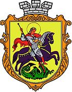
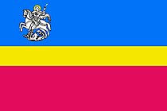

Ні́жин — вузол залізничних та автомобільних шляхів, районний центр Ніжинського району Чернігівської області, друге за величиною місто обласного значення, що розташоване на берегах р. Остер за 80 км від обласного центру. Чисельність населення складає 71 тис. осіб. Згідно з останнім переписом населення 2001 року, українці становили 93,47 %, українською розмовляє приблизно 90 % мешканців міста.
Відомі люди
1623 народився Роман Ракушка-Романовський, шевченкознавець Михайло Новицький. У Ніжині народився і провів дитячі роки мореплавець Юрій Лисянський (1773–1836). 1907 народився учений Олександр Знойко, а 1911 — співак Марк Бернес.
До Ніжина приїздив Тарас Шевченко.
Ніжинську гімназію закінчило багато відомих людей.
1881 року в місті відкрили перший у Російській імперії пам'ятник Миколі Гоголю.
У Ніжині працював лікарем Петро Андрійович Буштедт, народився його син Петро Петрович Буштедт — учений у галузі електрозварювання, доктор технічних наук (1936), член-кореспондент АН УРСР (1939).
Настоятелем Миколаївського собору був отець Георгій (Спаський), у Ніжині народилися його діти — мистецтвознавець Євгенія Спаська та історик Іван Спаський.
На ніжинській сцені грали українські актори Марія Заньковецька (у Ніжині вона жила і працювала), Панас Саксаганський, Микола Садовський, Марко Кропивницький.
В Ніжині народився Олександр Михайлович Богомолець (1850–1935)- революціонер-народник, земський лікар; батько академіка, президента АН УРСР Олександра Богомольця (1881–1946), прадіда доктора Ольги Богомолець (нар.1966 р.), засновниці історико-культурного комплексу «Замок Радомисль».
Тут пройшли дитячі роки Олександра Богомольця-молодшого і конструктора перших космічних кораблів Сергія Корольова, також української кіноакторки Людмили Сосюри.
З Ніжином пов'язані імена академіків Юрія Соколова та Милиці Нечкіної.
Економіка та промисловість
У 90-х роках, у період становлення незалежності України, відбулося суттєве зниження економічного розвитку Ніжина. Проте за останні роки прослідковуються позитивні зміни у промисловості Ніжина.
Сьогодні у Ніжині працюють 15 промислових підприємств восьми галузей: машинобудівної, медичної, хімічної, харчової, деревообробної, будівельної, легкої та поліграфічної. Однією з основних галузей промисловості по потужностях та кількості працюючих була і на сьогодні залишається машинобудівна. Це 4 підприємства, з них 3 раніше мали монопольне становище. На їхніх виробничих потужностях вироблялось продукції на 66,2 % від загального обсягу в цілому по місту, чисельність працюючих, зайнятих на цих підприємствах, становила 78,2% від всіх зайнятих на промислових підприємствах. Ніжин за темпами промислового виробництва значно перевищує середньо-обласний показник у 9,9 % і становить 26%.
У Ніжині успішно розвивається малий і середній бізнес. Кількість малих підприємств у розрахунку на 10 тисяч жителів за 2004 рік становить 32 одиниці.
Продукція, що виготовляється на промислових підприємствах міста відповідає світовим стандартам. Торговельні операції підприємства міста здійснюють з одинадцятьма країнами світу, серед них: Росія, Білорусь, Індія, Бельгія, Литва, Естонія, Польща та інші. Ніжин підтримує партнерські зв’язки з містами Свідниця (Польща), Яніна (Греція), Мозир (Білорусь).
Символіка міста

Офіційний геральдичний символ міста Ніжина, надано привілеєм польського короля Сигізмунда ІІІ у 1625 р. разом із магдебурзьким правом. Підтверджений привілеями Владислава ІV 1633 року, Яна Казиміра 1659 року.
Затверджено рішенням ХХV сесії Ніжинської міської ради ХХІ скликання від 14.10.1992 р.
На гербі зображений у золотому полі Святий Юрій, повернутий вліво, на чорному коні зі срібною гривою, який пробиває списом змія зеленої барви. Святий Юрій у червоному плащі та червоних чоботях, кінь у золотій збруї. Щит обрамований декоративним картушем і увінчаний срібною міською короною з трьома вежками.

Являє прямокутне полотнище з трьома горизонтальними смугами. Верхня широка смуга синього кольору, середня вузька жовта смуга, нижня широка малинова смуга. У верхньому лівому куті розташоване зображення Георгія Побідоносця аналогічне до того що на гербі міста.
Полотнище прапора виконане з використанням двох геральдичних кольорів й кольорів двох (шляхетних) металів, що позначають:
білий (срібло) - символ чистоти, добра, безвинності (скромності). У палітрі прапора він відбиває безхмарне, мирне небо, чистоту помислів жителів краю;
жовтий (золотий) - символ багатства, справедливості, великодушності;
синій - символ краси, м’якості, величі.
пурпуровий - символ помірності, щедрості, шляхетності.